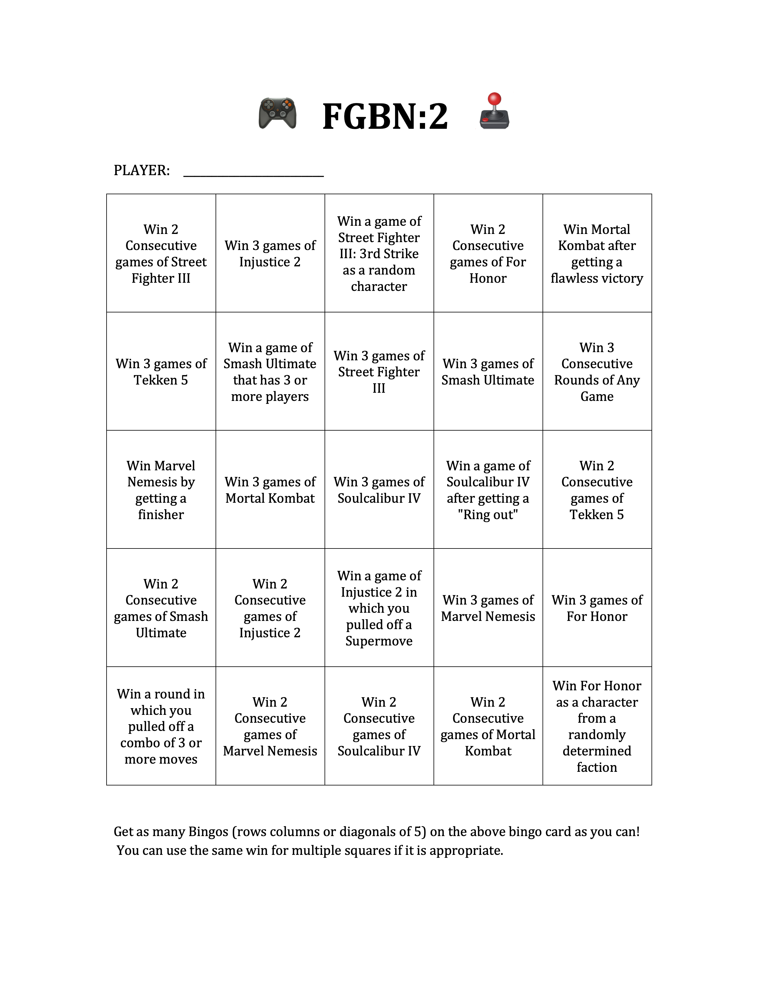

FIGHTING GAME
BINGO NIGHT 2
Bord ended up transferring colleges much closer to home, and when he did he kinda started bragging about the sucess of the original fighting game bingo night to his friends there, and it innevitably reformed with a new group. The format remained the same, some of the games were even retained, but the group and location changed. This time it took place in an in-construction basement of one of the participants.
8 more games, 17 new participants, the game was once again afoot. A wide array of machines both new and very very old (the oldest was a 2002 PowerPC macbook was actually older than every single player). This time communication and organization was considerably better, as the concept was no longer new. Most every machine ran glitchless save for a couple recoverable controller errors.

The Games
Marvel Nemesis: Rise of the Imperfects, Super Smash Brothers Ultimate, and Street Fighter III: 3rd Strike - Fight for the Future
Marvel Nemesis and Super Smash Brothers, and Street Fighter 3, were carried over, unchanged, from the original FGBN. The challenges were not the same however:
For Smash Ultimate the challenge changed to: Win a game of Smash Ultimate that has 3 or more players.
The challenge for Nemesis remained: Win a round of Marvel Nemesis by getting a finisher.
The challenge for Street Fighter became: Win a round of Street Fighter III as a random character. This character was determined by a die roll.
For Honor
Released in 2017 by Ubisoft, For Honor, although somewhat janky and supporting a slightly toxic community, is a real gem among fighting games. The game features full 3d movement, but almost in the way a third-person shooter does, where the camera remains behind the player's character model and they are allowed free roam of large game maps.
The mechanics of For Honor are rather unique. Players may lock on to a target, i.e. an enemy player, and while locked on the player controlls their "guard direction". this is a simple indicator, up, right or left, that controlls both offense and defense. While holding a direction, the players attacks will originate from that direction, and if they are not performing an action they will block attacks from that direction. They can also parry attacks by counterattacking in the proper direction with good timing. This dirrectionality, along with the ability to feint attacks, is the core of For Honor's gameplay.
The challenge was: Win as a hero from a random faction. For Honor's characters, called heroes, are split into 5 major factions, 4 of which are largely playable on the Ultimate edition of the game. Players running the challenge had to roll a die selecting a faction for them then choose their hero from those avaliable.
Injustice 2
Released by Capcom in 1999, 3rd Strike was, ironically, the 11th game in its series. It was the tamer, more kid-friendly cousin to Mortal Kombat, keeping the two-dimensional combo-based format but maintaining a more cartoonish and bloodless style. Don't mistake this for meaning the game is easier however. Street Fighter is still as technical as they come.
The game features fast-paced, cinematic combat with interactive stages, super moves. It focuses on aggressive 2D-style fighting with a strong emphasis on positioning, combos, and high-impact special attacks.
The challenge was: Win a game of Injustice 2 in which you pulled off a Supermove.
Tekken 5
Returning to the party was Bandai-Namco's Tekken. Released in 2005 Tekken 5 was one of the PlayStation 2 iterations of Tekken.
The game refines the series' core 3D fighting system with improved movement, tighter combo execution, and a large roster of returning and new characters. Tekken 5 is widely regarded as one of the strongest entries in the franchise for its balance, speed, and competitive depth, although Tekken 3 remains ever so slightly more popular.
Tekken 5 ended up not having a challenge. The challenge was set to: Win a round of Tekken 5 in which you pulled off a combo of 3 or more moves. Tekken 3 had a combo counter and this was written assuming Tekken 5 also had one. Spoiler -- it does not. As a retult that square was filled by winning a round without condition.
Soulcalibur IV
Also returning was Namco's Soulcalibur series. However this time it was 2008's Soulcalibur IV. Joining the melee in SC4 was several Star Wars Characters, as it was a crossover game with Star Wars: Force Unleashed.
The challence was: Win a game of Soulcalibur IV after getting a "Ring out". This means winning by knocking your opponent off the stage. With the 3d motion, built in dodges in combos, and knockback moves this is a real option in games of Soulcalibur in all its versions.
Mortal Kombat
Mortal Kombat is a necesity in any fighting game party, but for FGBN2 we went truly oldschool and played the original release. (Granted the Super Nintendo version but still).
The original title is as brutal and combo-focused as any in the seires. It's very dynamic and actually steel feels good to play even in 2026. It's easy to see after a couple rounds why the arcade release was so genre-defining.
The challenge was: Get a flawless victory. A victory in which you were not hit once. Just about no one got this challeng it's brutal.
The Winner
In the end, Bord again emerged with the most bingos. However, since that feels rather rigged, him having set up most of the games, it was decided that the person with the 2nd most bingos would be allowed to challenge him for victory. That man was Riley Nicklin, who beat him soundly in a game of Injustice 2 by spamming the Teenage Mutant Ninja Turles ranged assist move. It was a clean victory however and he now posesses the Purple Pikmin of Power, the buff fanart of a Pikmin, from the Nintendo series of the same name, that served as the trophy.